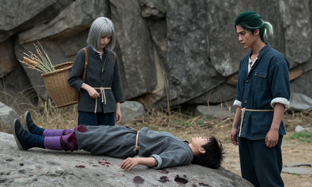
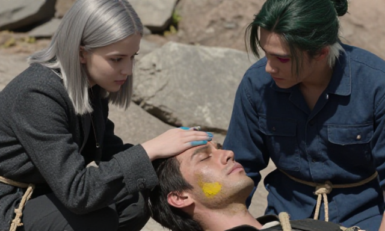

P0-2 三镜盲判（6 张）
预注册判据
问一：薰衣草花田是否画面主体？1=完全不是 / 3=约一半 / 5=铺满画面
问二：人物是否在画面偏左三分之一？（是 / 否 / 看不清）
先写判据再打分；不要打开 answer_key.json。
三镜成对，但**顺序已打乱**，不要试图猜哪两张是一对。
六张图
b1

b2
b3
b4
b5
b6

分数填进 scores.csv
 b5
b5 b6
b6